A browser-native open-world space game — fly, mine, fight, trade, and burn back the fog of war — built on React Three Fiber with a build-time AI asset pipeline (Tripo3D · ComfyUI · Blender · ElevenLabs · OpenAI), delivered first as one fully playable sector.
Status markers:
[] idle ·
[wip] in progress ·
[x] done ·
[f] failed
This plan exists to turn a broad "build a complete space game" brief into a buildable, honestly-scoped engineering sequence. The operator wants an open-world solar-system game with exploration, fog of war, asteroid mining, faction combat, trading outposts, gear upgrades, and swappable ships with unique abilities — presented with cinematic, photoreal-leaning visuals matching the supplied key art.
The intended outcome of this plan is not a design document. It is a working, shareable URL: a single star system with one fully playable sector loop — undock, fly out under fog of war, discover an asteroid belt, mine it, get ambushed by pirates, survive, dock at a faction outpost, sell ore, buy an upgrade, swap into a second hull, and see the map permanently brighten where you have been. Every system in the brief is architected for full scope from day one; only content volume is deferred.
Why the slice comes first: the brief's failure mode is a year of systems work with nothing playable. The slice forces every subsystem — flight, mining, combat, AI, economy, docking, fog, save — to touch the player within the first milestone, so balance and feel problems surface while they are still cheap.
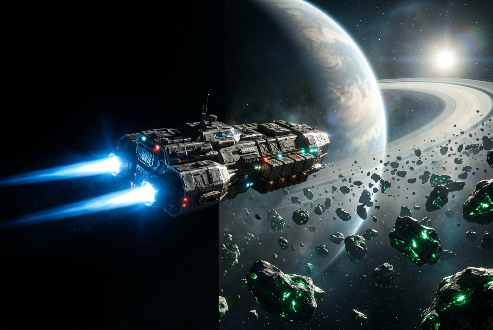
Four hard constraints collide in this brief, and the plan's job is to resolve them rather than pretend they do not exist:
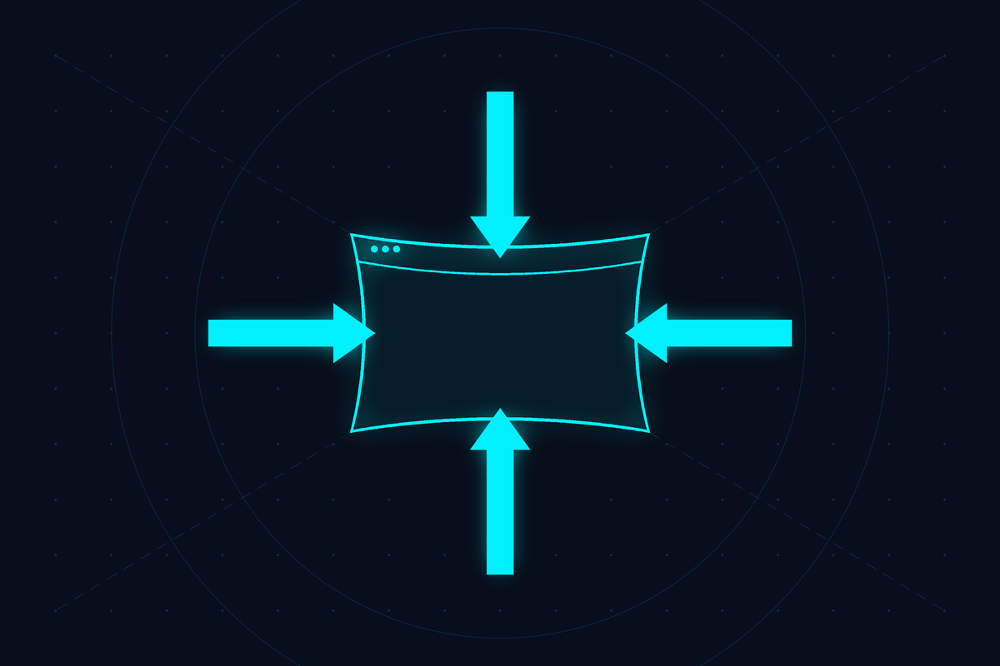
@react-three/drei for camera/loader helpers.WebGPURenderer where available, automatic WebGL2 fallback.
WebGPU buys compute-shader particles and cheaper instancing; the fallback path must stay first-class,
not aspirational.postprocessing library (pmndrs) — SelectiveBloom,
DepthOfField, chromatic aberration, anamorphic lens flare, film grain, vignette, SMAA. This effect
stack is the cinematic look; it is a Phase-1 concern, not a polish concern.idb-keyval (IndexedDB) for
the save file, including the fog-of-war discovery set.tools/ workspace in the game repo drives Tripo3D
(text/image → GLB hulls), local ComfyUI (PBR texture sets, skybox cubemaps, UI art, station decals),
Blender via MCP on :9876 (retopo, decimate, LOD chain, collision proxies, pivot/scale
normalisation, GLB export), ElevenLabs (SFX + music stems) and OpenAI images (concept passes feeding
Tripo3D's image-to-3D). Every artifact is committed or LFS-tracked as a finished static file with a
manifest recording its provenance and generation parameters. The shipped game makes zero AI API
calls and runs fully offline.InstancedMesh with 3 LODs and per-instance material tinting by
mineral type. Thousands of unique-looking rocks for a few hundred KB — this is strictly better than
generating asteroid models, and it is what the reference image's belt actually needs.sectorId. One concept, six features.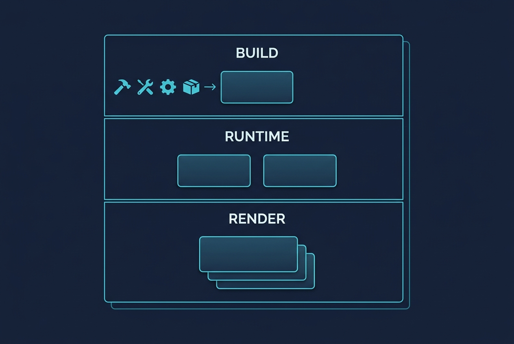
H:\FABLE-HARNESS\CONSTITUTION.md — governs how this plan is executed (N3 bounded retry,
N8 no-MCP-in-harness-operation, N9 preserved-invariants discipline). Note the N8 boundary: the
harness never depends on MCP/network; the game repo's build-time asset pipeline
legitimately does, and must never leak that dependency into the game's runtime.H:\FABLE-HARNESS\specs\solar-frontier.html — this plan; the live status board. Flip status
chips here as phases progress.H:\FABLE-HARNESS\specs\solar-frontier\ — sibling folder for this plan's figure PNGs.H:\FABLE-HARNESS\.claude\skills\lib\plan-images.ps1 — the local, no-network CLI used to
extract this plan's image prompt sheet and later apply the generated PNGs.H:\solar-frontier\ (its own git repo, outside the harness)package.json, vite.config.ts, tsconfig.json, eslint.config.js — toolchain.index.html, src/main.tsx, src/App.tsx — entry + app shell.src/render/Renderer.tsx — WebGPU-with-WebGL2-fallback canvas, tone mapping, colour space.src/render/PostFX.tsx — the cinematic effect stack (bloom, DoF, flare, grain, vignette, SMAA).src/render/layers/{FarLayer,MidLayer,NearLayer}.tsx — the three-camera compositing strategy.src/render/Skybox.tsx, src/render/VolumetricFog.tsx, src/render/LensFlare.tsx — deep-space atmosphere.src/ecs/world.ts, src/ecs/components.ts — miniplex world + component schema.src/ecs/systems/*.ts — flight, collision, weapons,
damage, ai, mining, pickup, spawn,
lod, audio, fog.src/sim/floatingOrigin.ts — origin rebasing when the player exceeds the shift threshold.src/sim/flightModel.ts — thrusters, retro-rockets, strafe, angular damping, boost.src/sim/spatialHash.ts — uniform-grid broadphase.src/worldgen/{rng,system,belt,asteroid,outposts,sectors}.ts — seeded generation.src/worldgen/asteroid.worker.ts — off-thread displaced-icosphere meshing.src/game/{economy,market,inventory,upgrades,ships,abilities,factions,reputation,save}.ts — rules layer, pure and unit-testable.src/data/*.json — ships, modules, minerals, factions, market curves, spawn tables (data-driven balance).src/ui/{Hud,Targeting,CargoBay,StationView,Market,Outfitter,Shipyard,StarMap,Settings}.tsx — React UI shell.src/ui/fog/fogTexture.ts — the persistent discovery mask backing the star map reveal.src/audio/{engine,mixer,musicDirector,sfx}.ts — Web Audio graph + adaptive stem director.tools/pipeline/{tripo,comfy,blenderMcp,elevenlabs,openaiImage}.ts — build-time generators.tools/pipeline/optimize.ts — gltf-transform: Draco/meshopt, KTX2, LOD emit, budget report.tools/pipeline/manifest.json — per-asset provenance: tool, prompt, seed, params, licence, hash.public/assets/{ships,stations,textures,skybox,audio}/ — the committed static output.tests/unit/*.test.ts, tests/e2e/*.spec.ts, tests/perf/probe.ts.docs/{GDD.md,ART_BIBLE.md,PIPELINE.md,BALANCE.md} — the design-document deliverable, kept in-repo beside the code it describes.[x]Closed 2026-07-27 across six implementation runs plus one documentation run. Every
task-list item ships and was confirmed rendering in real GPU Chrome. Two exit checks remain
genuinely unverified and are NOT claimed as passed: the mid-range-GPU and integrated-GPU
frame-rate targets (60 fps was measured on an RTX 3080 Ti, which is above "mid-range"; no
mid-range or integrated hardware was available), and Firefox/Safari console cleanliness (the
available browser tooling drives Chrome only). All measured evidence — build, test, bundle,
frame-time, console census, exit-check status, deliberate substitutions and the full defect
history — lives in H:\solar-frontier\docs\verification\phase-1-capture.md, which
is the citable source of truth for every empirical claim about this phase.
The most instructive fact about Phase 1: its first delivery rendered a completely black screen while passing typecheck, lint, every test, the production build and the bundle-size budget. A green build is not evidence that a rendering change works — carry that into every later phase.
Stand up the repo and prove the look before any gameplay exists. The deliverable is a static scene — one placeholder hull, one lit asteroid, one skybox, one looming planet — that already reads as cinematic. If the look cannot be reached with an empty scene, no amount of gameplay will rescue it, so this risk is retired first.
[x] Initialise H:\solar-frontier: git, pnpm, Vite, TypeScript strict, React 19, r3f, drei, eslint + prettier, Vitest.[x] Renderer.tsx: WebGPU with feature-detected WebGL2 fallback†1; ACES Filmic tone mapping; sRGB output; adaptive DPR clamp.[x] Three-layer camera compositing (far/mid/near) with independent near/far planes and depth clear between layers†2.[x] PostFX.tsx: Bloom (global, replacing SelectiveBloom to resolve an upstream render-loop regression — see Amendment), DepthOfField, GodRays (sun-matched, standing in for the anamorphic lens-flare item), chromatic aberration, film grain, vignette, SMAA — with a quality-tier switch (low/med/high/ultra).[x] Deep-space volumetric fog: procedural (fbm-noise-shaded sphere, not screen-space raymarched) nebula backdrop in the far layer, driven by the shared 3D simplex noise chunk.[x] Lighting rig: one directional "sun" with a matched flare/GodRays, skybox-tinted ambient fill, and an emissive-driven bloom convention documented in docs/ART_BIBLE.md.[x] Perf HUD (r3f-perf, dev-gated) + tests/perf/probe.ts capturing frame time on a fixed camera path.[x] CI: typecheck, lint, unit tests, production build, bundle-budget assertion.[x] Write docs/ART_BIBLE.md — the look rules: exposure range, emissive budget, rim-light convention, flare discipline, colour script per sector type.[] Static scene holds ≥60 fps at 1080p on the target mid-range GPU at "high" tier; ≥30 fps at "low" on integrated graphics. Unverified this stage — no GPU-instrumented browser was available to the engineer; tests/perf/probe.ts + ?perf=1 exist and are ready to run, see docs/ART_BIBLE.md "Phase 1 verification status".[] Both WebGPU and forced-WebGL2 paths render visually equivalent frames (side-by-side screenshot review). Superseded this stage — see Amendment †1: only a WebGL2 path exists in Phase 1, so there is no second path to compare against yet.[] No console errors/warnings on boot in Chrome, Firefox and Safari. Unverified this stage — same no-browser-harness constraint as the fps check.[] Side-by-side comparison against the reference key art: a written verdict on which qualities are matched and which are deliberately out of reach. Blocked — the reference key art (phase1.png) is itself still "Image pending" in this plan, so there is nothing to compare against yet; see docs/ART_BIBLE.md for what the implementation can claim in the meantime.[x] pnpm build output < 2 MB JS gzipped, excluding assets. Mechanically verified: pnpm run test:budget reports 0.361 MB gzipped JS against the 2 MB budget.If a check cannot be made to pass after reasonable effort, mark the phase
[f] and record why in Notes rather than looping forever.
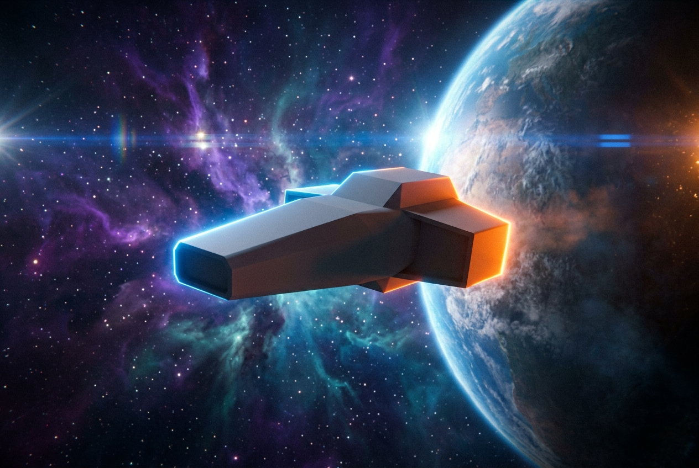
[]De-risk the entire art strategy early by pushing exactly one asset of each class all the way through the pipeline and into the running build. Volume comes later; the path must be proven now, because if Tripo3D output cannot be normalised into a game-ready GLB, the art plan changes and every later phase's estimates change with it.
[] tools/pipeline/openaiImage.ts: concept-art pass — orthographic ship views from a prompt, saved as pipeline inputs.[] tools/pipeline/tripo.ts: text-to-3D and image-to-3D calls, polling, GLB download, retry/backoff, credit-usage logging.[] tools/pipeline/blenderMcp.ts: connect to Blender MCP on :9876 — import, decimate to target tri-count, generate LOD0/1/2, normalise scale + pivot + forward axis, build a convex collision proxy, export GLB.[] tools/pipeline/comfy.ts: ComfyUI workflow submission for (a) a PBR texture set and (b) a 6-face nebula skybox cubemap; seed and workflow JSON recorded per output.[] tools/pipeline/elevenlabs.ts: SFX generation (engine hum loop, pulse cannon, mining laser, explosion) and music stem generation.[] tools/pipeline/optimize.ts: gltf-transform — meshopt/Draco, KTX2 texture compression, per-asset budget report that fails the build when exceeded.[] manifest.json provenance record per asset: tool, prompt, seed, parameters, output hash, licence note.[] Ship the first real hull (Kestrel), first station module, first skybox and first four SFX into the Phase-1 scene.[] Write docs/PIPELINE.md — how to regenerate any asset from scratch, and the explicit rule that runtime never calls these tools.[] Generated Kestrel GLB loads, is correctly scaled and oriented, ≤15k triangles at LOD0, with working LOD switching.[] Full asset bundle for the slice projects under a 30 MB budget; the budget check fails CI when exceeded (verify by deliberately breaching it).[] Pipeline is reproducible: re-running a manifest entry regenerates an equivalent asset, or the non-determinism is documented and the artifact is treated as immutable.[] Offline test — the load-bearing one: production build served with all AI endpoints unreachable and ComfyUI/Blender not running boots and plays identically.[] No API key or endpoint string appears anywhere in the client bundle (grep the build output).If a check cannot be made to pass after reasonable effort, mark the phase
[f] and record why in Notes rather than looping forever.
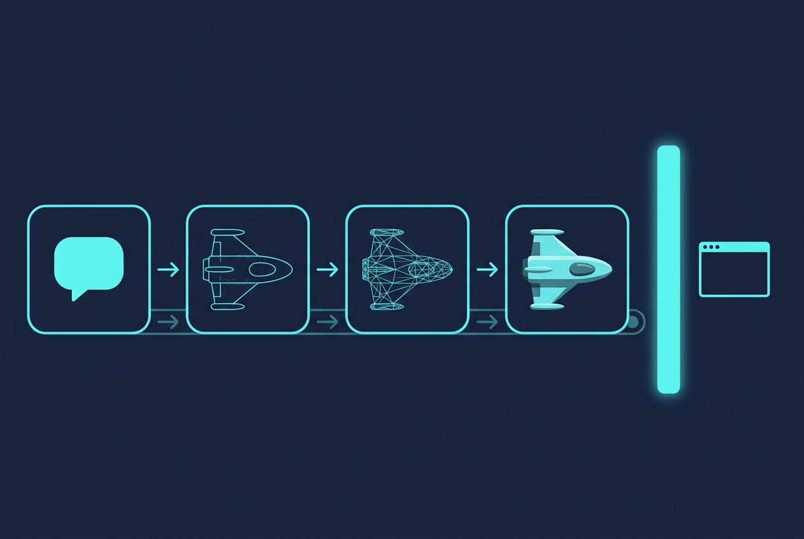
[]The requested "player controller script", built properly: a physics-lite arcade flight model whose feel is the game's single most important quality. Every subsequent system is judged through this. Tune it until flying an empty void is enjoyable on its own.
[] flightModel.ts: main thrust, retro-rockets/brake, 6-way directional strafe thrusters, pitch/yaw/roll with per-axis angular damping, configurable inertia, hard speed cap with a boost overrun.[] Two flight assists: Assisted (velocity aligns to facing, forgiving) and Newtonian (drift retained) — toggleable, defaulting to Assisted.[] Per-hull handling profiles driven from src/data/ships.json, so Kestrel/Mule/Ridgeback feel genuinely different.[] Chase camera: spring-damped follow, speed-driven FOV, roll lean, impact/thrust shake, and a cinematic near-clip-safe framing.[] Input abstraction: keyboard+mouse, gamepad, remappable bindings persisted to IndexedDB.[] Thruster VFX bound to actual control inputs — engine plume scaling, RCS puffs on strafe, heat-haze at boost.[] Engine audio bound to throttle: layered bass hum with pitch/gain envelopes and a boost transient.[] Fixed-timestep simulation (60 Hz) with render interpolation, so feel is frame-rate independent.[] Unit tests: integrator is deterministic and identical across 30/60/144 fps render rates.[] Input-to-visible-response latency under 2 frames; no dropped inputs under load.[] All three hull profiles measurably differ in time-to-max-speed, turn rate and stopping distance (asserted numerically).[] Hands-on feel review against the brief's "responsive, physics-lite" wording; record the verdict in docs/BALANCE.md.[] Gamepad and keyboard paths both fully playable.If a check cannot be made to pass after reasonable effort, mark the phase
[f] and record why in Notes rather than looping forever.
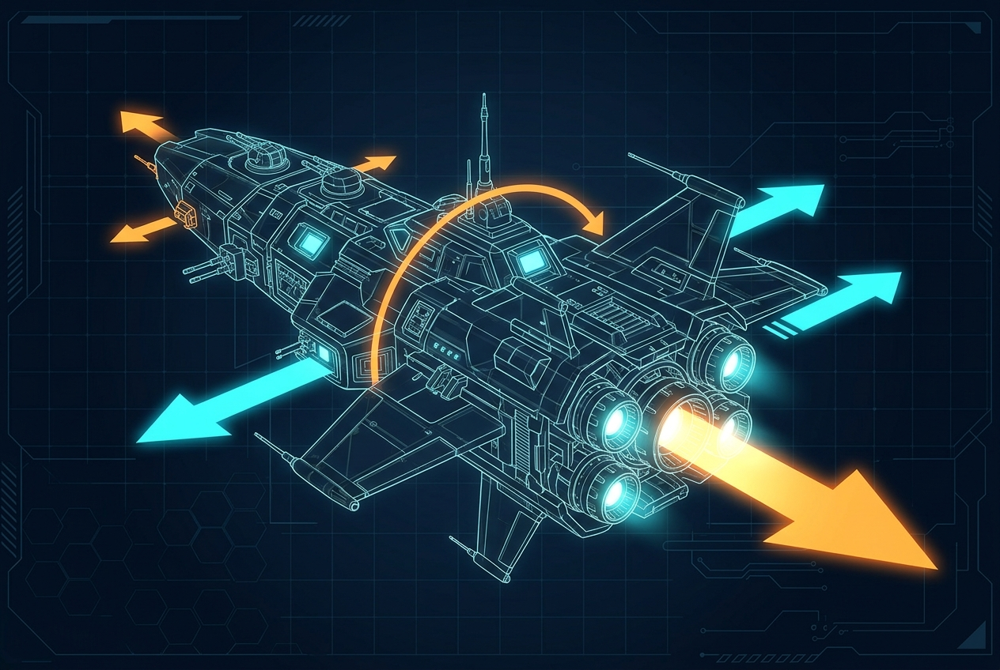
[]Build the universe the player flies through: floating origin, the sector graph, seeded generation of planets, belts, outposts and dens, and streaming so only nearby content is resident. This is the requested "procedural generation logic" milestone.
[] floatingOrigin.ts: rebase world when the player exceeds a threshold; all systems consume origin-relative positions; store absolute positions in float64.[] rng.ts: seeded PRNG (xoshiro/PCG) with named sub-streams, so adding a generator never reshuffles existing content for a given seed.[] system.ts: star, planets on orbital rings, moons, belt placement, a 3×3 sector grid with typed sectors (core / belt / deep / contested / anomaly).[] belt.ts: asteroid field distribution (density falloff, clustering, mineral-richness map per belt biome).[] outposts.ts: station and pirate-den siting with faction-control assignment and minimum-separation constraints.[] Streaming: activate/deactivate sector content by distance; object pooling for asteroids, ships and projectiles.[] Far-layer planet rendering: fake-scale impostors with matched sun direction, atmosphere rim shader and terminator shading.[] Dev-only seed browser: regenerate and inspect systems, pin the slice's chosen seed into src/data/.[] Determinism test: the same seed produces byte-identical generated layouts across 100 runs.[] Precision test: fly to the system's outer edge — no positional jitter, no z-fighting, no visible origin-shift pop.[] Constraint tests over 1000 seeds: no overlapping stations, every sector reachable, every belt has ≥1 mineral type.[] Streaming test: crossing all 9 sectors keeps memory flat (no leak) and causes no frame spike >33 ms.[] Visual check: planets read as massive from every sector, per the brief's "loom massive in the background".If a check cannot be made to pass after reasonable effort, mark the phase
[f] and record why in Notes rather than looping forever.
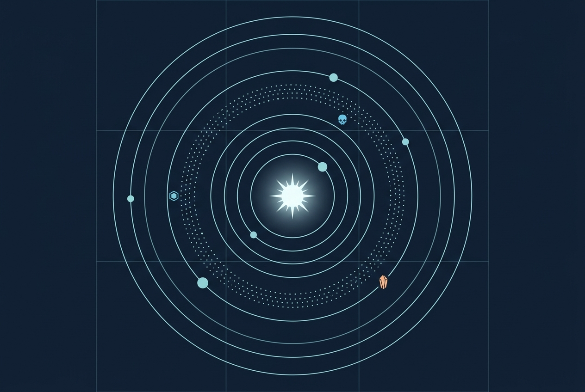
[]The first complete gameplay loop: fly to a belt, target a rock, mine it, break it into chunks, scoop the chunks, fill cargo. Asteroids are procedurally meshed and instanced, never hand-modelled.
[] asteroid.worker.ts: icosphere + 3-octave simplex displacement producing a pool of ~24 unique meshes per biome, generated off the main thread.[] InstancedMesh rendering with 3 LODs, frustum + distance culling, per-instance rotation drift and mineral-tint.[] Mineral visual language: emissive crystal veins for Quantum Crystal, metallic speckle for Titanium, dull ferrous for Iron — readable at a glance from mining range.[] Mining laser: continuous beam, heat/overheat model, per-second yield scaling with laser tier and hull bonus, sustained-contact requirement.[] Asteroid integrity → fracture: splits into 2–4 smaller instances plus collectible ore chunks; the tiniest tier vaporises.[] Ore chunks: magnetic tractor pickup within radius, cargo-hold capacity enforcement, "hold full" feedback.[] Ship–asteroid collision via the spatial hash: bump damage proportional to impact speed.[] Mining VFX/SFX: beam impact sparks, glowing molten cut point, dust plume, fracture debris, and the crack-then-shatter audio arc.[] Ore-scanner pulse ability (Ridgeback): a radial ping that highlights high-value rocks through the belt for a few seconds.[] 2000 instanced asteroids in view hold the frame budget; measured by the perf probe on a fixed belt fly-through.[] Unit tests: yield curves, fracture tiering, and cargo capacity math (including the exactly-full boundary case).[] Worker meshing never blocks the main thread >4 ms in a single frame.[] A full mine-a-rock-to-nothing cycle produces the expected total ore, with no orphaned instances or leaked pool entries.[] Playtest: mining a single asteroid takes 8–20 s by tier and feels weighty rather than tedious.If a check cannot be made to pass after reasonable effort, mark the phase
[f] and record why in Notes rather than looping forever.
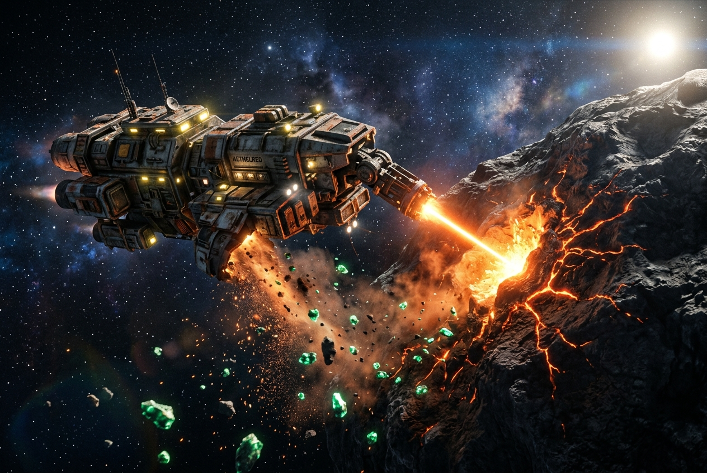
[]Shields, hull, weapons, evasion, and explosions that light the world — the brief explicitly asks that detonations cast dynamic light on nearby asteroids and ships, so that is a stated requirement here, not a nice-to-have.
[] Defence model: regenerating shields with a post-hit delay, then hull integrity, then destruction; per-hull and per-module modifiers.[] Weapons: pulse cannon (projectile, capacitor-limited), railgun (hitscan, charge-up, shield-piercing fraction), mining laser reused as a weak weapon.[] Capacitor/heat economy shared across weapons and boost, so offence and evasion genuinely trade off.[] Targeting: nearest/next-target cycling, lead-indicator reticle, subsystem-agnostic damage for the slice.[] Hit feedback: shield-impact hex ripple shader, hull scorch decals, sparking damage particles, screen shake and audio ducking on heavy hits.[] Destruction: multi-stage explosion with a real dynamic point light, expanding shockwave, tumbling debris chunks, and salvage/loot drops.[] Loot: scrap, salvaged modules, and faction-specific drops from pirate kills.[] Player death: hull loss → respawn at last docked station with an insurance/cargo-loss penalty.[] Combat abilities: Kestrel afterburner, Mule EMP burst (disables nearby AI weapons briefly), plus a cloaking device reserved for Milestone 2.[] Unit tests: damage application order (shield → hull), regeneration timing, EMP duration, insurance settlement math.[] Projectile collision is reliable at maximum closing speed — no tunnelling (verified with a swept-sphere test at 2× max relative velocity).[] Eight simultaneous combatants plus VFX hold ≥50 fps at "high" tier.[] Verified on screen: an explosion visibly lights nearby asteroids and hulls (the brief's explicit atmosphere requirement).[] No dynamic-light leak — light count returns to baseline after all explosions finish.If a check cannot be made to pass after reasonable effort, mark the phase
[f] and record why in Notes rather than looping forever.
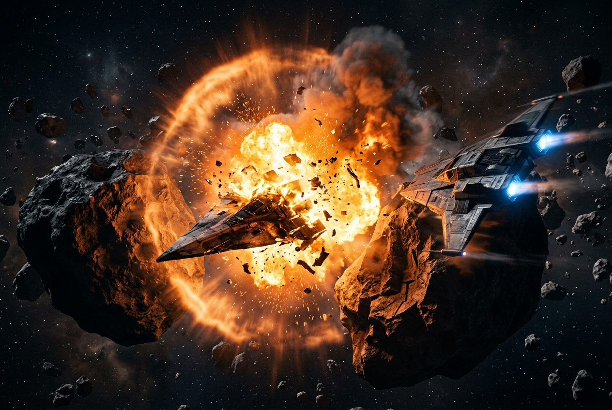
[]Populate the system with agents that have their own business: pirates hunting value, traders running routes, patrols enforcing law. Reputation makes the player's choices stick.
[] AI core: behaviour-tree or utility-scored state machine — patrol, pursue, attack, evade, flee, dock, mine, escort — sharing the player's flight model so AI ships obey the same physics.[] Combat AI: lead-aim with skill-scaled error, break-off manoeuvres, strafe evasion, morale-based fleeing below a hull threshold.[] Pirates: ambush spawning weighted by sector value and player cargo worth — the brief's "actively ambushing in high-value resource zones", implemented as a real value heuristic rather than random spawns.[] Traders/miners: neutral NPCs flying station-to-station and working belts; attackable (piracy) or defendable (escort).[] Faction model: Consortium, Vanguard, Ashvein, with a reputation scalar each and an inter-faction relationship matrix, so helping one can cost you another.[] Reputation consequences: market price modifiers, gear-tier gating, docking permission, and patrol hostility.[] Distress-call events: a trader under pirate attack, with reputation rewards for intervening — the first emergent content hook.[] Sensor/awareness model so AI cannot see through the fog the player cannot.[] Unit tests: reputation arithmetic, threshold crossings, and the hostility matrix, including the "hostile to everyone" edge state.[] Headless soak: 30 minutes of simulated AI with no player produces no deadlock, no runaway spawns, and stable population counts.[] AI ships never fly through asteroids or stations; collision avoidance verified in a dense belt.[] Playtest: an ambush is threatening but survivable in a starting hull; a fleeing enemy is catchable but not trivially.[] Attacking a trader visibly and durably changes prices and patrol behaviour on the next dock.If a check cannot be made to pass after reasonable effort, mark the phase
[f] and record why in Notes rather than looping forever.
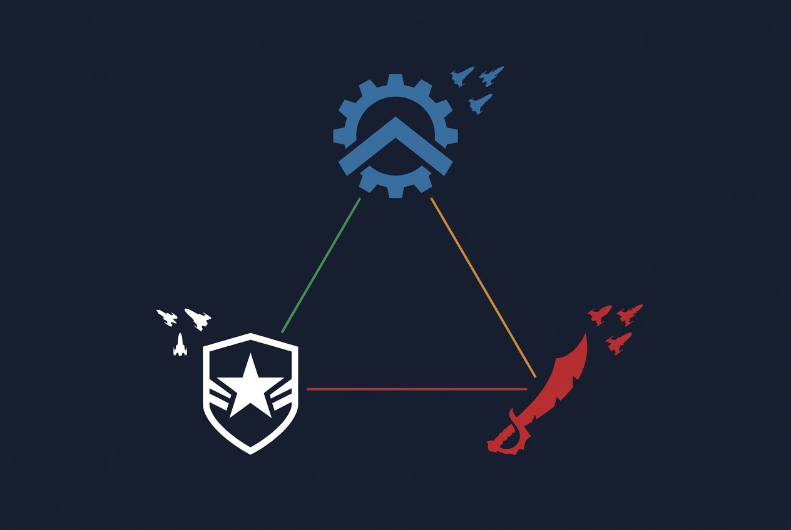
[]Close the loop: the safe harbour where mined ore and salvage become capability. Docking, market, outfitter, shipyard, and the abilities that make hulls play differently.
[] Docking: approach corridor, clearance request gated on reputation, docking animation, and a station interior/menu context.[] Market: per-station supply/demand pricing with a price curve reacting to player volume, mineral base values, and reputation discounts. Sell ore, sell salvage, buy fuel/ammo.[] Outfitter: module slots per hull (shield, engine, weapon ×N, mining laser, cargo expander, utility), tiered stock gated by faction reputation, buy/sell/fit/unfit with stat-delta previews.[] Shipyard: purchase and swap between Kestrel, Mule and Ridgeback; a hangar holding owned hulls with their fittings preserved; cargo transfer rules on swap.[] Ability system: per-hull active ability with cooldown, energy cost, HUD binding and VFX/SFX (afterburner, EMP burst, ore-scanner pulse).[] Repair and rearm services, priced against hull damage.[] Data-driven balance: all ships, modules, minerals and price curves live in src/data/*.json with a schema and a validator.[] Station exteriors and interiors dressed with Phase-2 pipeline assets; docking-bay lighting as a deliberate warm/cold contrast against open space.[] Unit tests: pricing curves, reputation discounts, the full buy → fit → sell → refund cycle, and that no sequence of trades creates money from nothing.[] Schema validation of all data files runs in CI; a malformed module fails the build.[] Ship swap preserves fittings and cargo correctly, including the over-capacity case (swapping freighter → fighter with a full hold).[] Every ability fires, respects cooldown, and has visible plus audible feedback.[] Playtest: one full belt run funds a meaningful upgrade — the economy's core pacing assertion.If a check cannot be made to pass after reasonable effort, mark the phase
[f] and record why in Notes rather than looping forever.
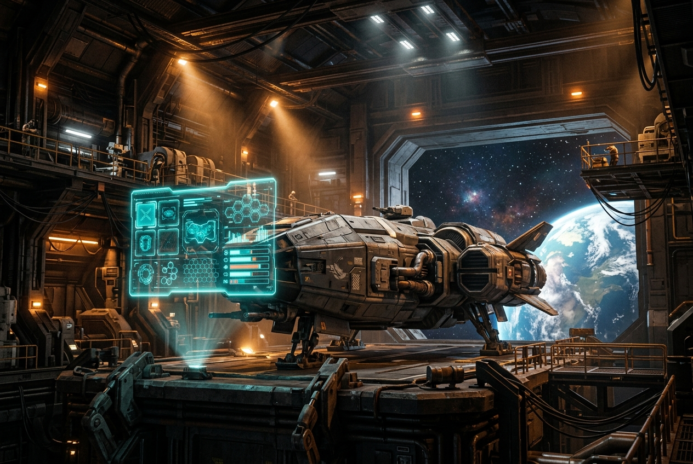
[]The exploration payoff, plus the requested UI/UX milestone: inventory, upgrade menu, and the fog-of-war map as one coherent interface language.
[] Discovery model: per-sector unknown → detected → explored, driven by proximity and sensor range; discovery is permanent and persisted.[] Sub-sector reveal: a discovery mask texture per sector so partial exploration reads as partial, not binary.[] Points of interest surface on discovery: planets, belts, outposts, pirate dens, anomalies — each with its own map icon and first-sighting notification.[] Star map: full-screen 3D system view with the fog mask applied, pan/zoom/rotate, POI filtering, distance and travel-time readouts, and a set-waypoint action.[] HUD: shields/hull/capacitor, throttle, speed, cargo fill, target panel with faction colour coding, waypoint compass, contextual prompts, damage-direction indicators.[] Cargo/inventory screen: mineral stacks with values, jettison, and an at-a-glance "what is this hold worth" total.[] UI design language: a diegetic-leaning holographic style specified in docs/ART_BIBLE.md, consistent across HUD, map, market and outfitter.[] Accessibility floor: colour-blind-safe faction palette, scalable UI, remappable controls, reduced-motion and reduced-shake options, subtitles for VO/alerts.[] Onboarding: a short non-modal prompt chain covering flight, mining, combat and docking, skippable and never blocking.[] Fog state survives reload with no regression to unknown; verified by a Playwright save-restore test.[] Unit tests: discovery-state transitions, including that a sector can never move backwards from explored.[] HUD/map render cost stays under 2 ms/frame — React must not be re-rendering per simulation tick (assert render counts).[] Every UI flow is fully keyboard-navigable; automated axe accessibility scan passes on all menus.[] Fresh-player test: someone with no briefing reaches their first sale within 10 minutes.If a check cannot be made to pass after reasonable effort, mark the phase
[f] and record why in Notes rather than looping forever.
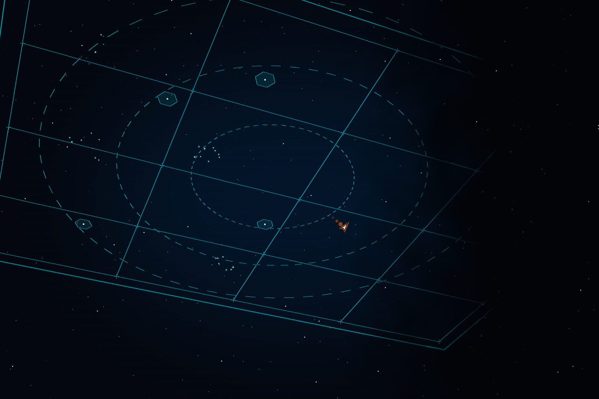
[]With every system present, spend a phase purely on the qualities the brief actually leads with: scale, grandeur, and a soundtrack that knows what is happening.
[] Colour script per sector type — a distinct lighting and nebula palette for core, belt, deep, contested and anomaly space, so sectors are identifiable by light alone.[] Volumetric depth pass: layered nebula sheets and dust motes producing genuine atmospheric perspective between foreground rocks and background planets.[] Scale cues: parallax dust near the hull, sun-occlusion flare behaviour, and deliberate silhouette framing when approaching planets and stations.[] Cinematic camera moments: undock reveal, first-entry-into-a-new-sector beat, kill-cam-adjacent explosion framing, and dock arrival — brief, skippable, never seizing control mid-combat.[] Photo mode (cheap, high value): free camera, FOV/DoF/exposure sliders, HUD hide, PNG export.[] musicDirector.ts: stem-layered adaptive score — ambient bed, exploration layer, tension layer, combat layer — crossfaded on a musical grid by a threat-level scalar, with a proper combat-exit tail rather than an abrupt cut.[] Full ElevenLabs SFX pass: weapons, impacts, shields, docking clamps, alarms, UI, ambience per sector type.[] Audio mixing: buses, ducking on explosions, distance attenuation, a low-pass "in-cockpit" filter, and per-category volume sliders.[] Quality-tier auto-detection with a first-run benchmark, plus manual override in settings.[] Side-by-side against the reference key art with a written gap analysis; the remaining gap must be a deliberate, documented choice rather than an unexamined shortfall.[] All four quality tiers hold their frame targets on their target hardware.[] Music transitions contain no audible clicks, and threat-level oscillation cannot cause rapid layer flapping (hysteresis asserted).[] Total audio payload under budget, with streaming for music stems rather than upfront decode.[] Photo mode produces images good enough to be the project's own marketing — a blunt but honest test of whether the look landed.If a check cannot be made to pass after reasonable effort, mark the phase
[f] and record why in Notes rather than looping forever.
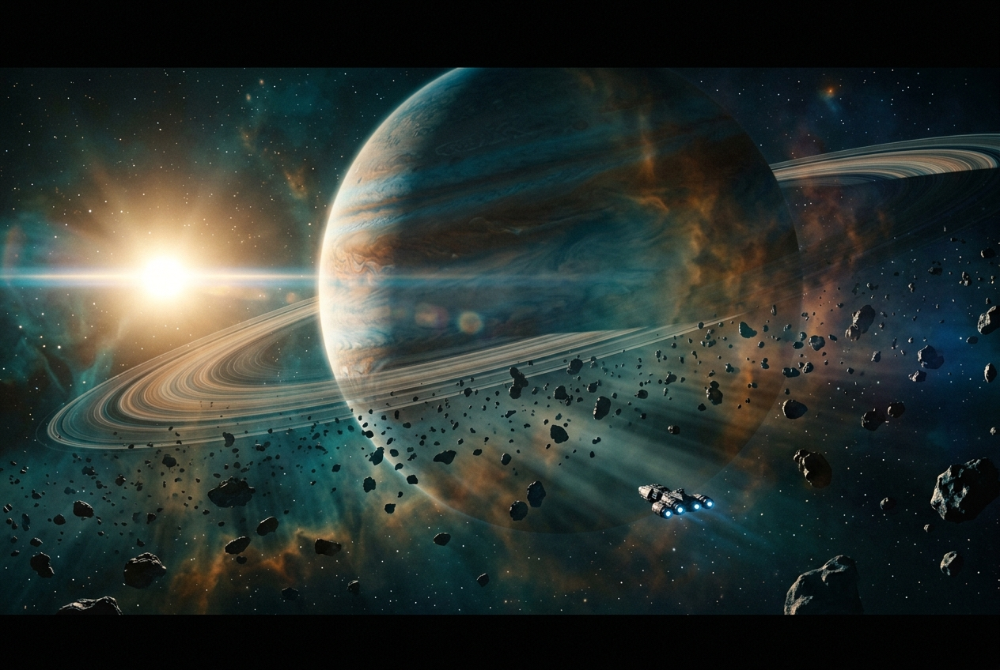
[]Make it a thing other people can play. Save/load, an honest balance pass, performance hardening, and a deployed build with a feedback path.
[] Save system: versioned schema in IndexedDB — seed, player state, fog set, reputation, hangar, fittings, cargo, discovered POIs — with migration support and export/import to a JSON file.[] Autosave on dock and on sector transition; manual save slots; corruption-tolerant load with a clear failure message rather than a white screen.[] Balance pass driven by docs/BALANCE.md: ore values, mining rates, module costs, ship prices, ambush frequency, repair costs — tuned so the first hour has a clear progression arc.[] Performance hardening: draw-call audit, texture-memory audit, GC-pressure audit (pool everything hot), and a 30-minute soak with no memory growth.[] Loading experience: progressive asset loading with a real progress bar and a playable-as-soon-as-possible first sector.[] Error resilience: WebGL context-loss recovery, asset-load failure fallbacks, and a global error boundary that offers a save export before reload.[] Deploy: static hosting with immutable asset hashing; a public URL.[] Complete docs/GDD.md — the design document deliverable from the original brief, now describing a game that exists rather than one that is hoped for.[] Milestone-2 backlog written from playtest evidence: missile swarms, cloaking device, more sectors and factions, station missions, multi-system jumps.[] Save-schema round-trip tests including a forced migration from a prior version.[] Playwright end-to-end: boot → undock → mine → fight → dock → sell → upgrade → save → reload → state intact.[] 30-minute soak: no memory growth, no frame-time drift, no leaked WebGL resources.[] Cold-load to playable under 15 s on a 20 Mbps connection.[] At least 3 external playtesters complete the core loop unassisted; their friction points are recorded, not rationalised away.[] Cross-browser: Chrome, Edge, Firefox, Safari — all playable at some quality tier.If a check cannot be made to pass after reasonable effort, mark the phase
[f] and record why in Notes rather than looping forever.
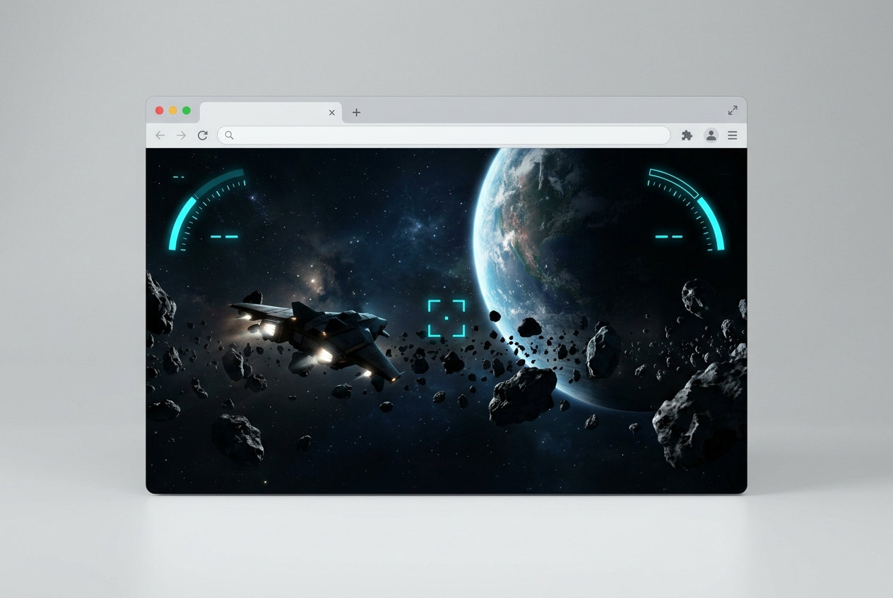
[] pnpm typecheck — TypeScript strict, zero errors, no @ts-ignore added during the slice.[] pnpm lint — ESLint clean, zero warnings at the configured level.[] pnpm test — full Vitest suite green (flight integrator, procgen determinism, economy, reputation, save migration, fog transitions).[] pnpm test:e2e — Playwright full-loop and save-restore specs green in all target browsers.[] pnpm build — production build succeeds; JS < 2 MB gzipped and total assets < 30 MB, enforced by the budget assertion.[] pnpm test:perf — deterministic camera-path probe meets the frame target at every quality tier.[] pnpm validate:data — every src/data/*.json passes schema validation.[] pnpm verify:offline — cross-phase integration check: production build serves and plays with every AI endpoint blocked and ComfyUI/Blender stopped, and no API key or AI endpoint string is present in the bundle.[] pnpm audit --prod — no high-severity dependency advisories.Same loop discipline as per-phase checks: nothing is done until every command here passes.
[] openH:\solar-frontier are
placeholders chosen by this plan. — Why it matters: renaming after Phase 2 means touching the
asset manifest, package name and deploy target. — Resolved: [] open[] open[] open[] open
(this is precisely what the Phase-2 spike answers)[] open[x] confirmed (AskUserQuestion, 2026-07-26)[] openUE5 is the correct answer to "photorealistic space game" in isolation, and it was offered first. The
operator chose Web/R3F, which is a coherent trade: instant shareability, dramatically faster AI-assisted
iteration, no multi-GB engine install, no cook/build cycle — in exchange for a lower ceiling on raw
fidelity. This plan therefore spends its rendering effort where a browser can still win: lighting,
volumetrics, composition, post-processing and scale contrast. Those are what actually sell the reference
image; Nanite-density geometry is not. That is the honest version of the trade, and it should be revisited
only if the Phase-1 look-dev check comes back unacceptable — in which case, mark Phase 1
[f] and re-plan for UE5 rather than grinding at a ceiling.
Tripo3D, ComfyUI, Blender-MCP, ElevenLabs and OpenAI are extraordinary force multipliers for a solo
developer — an entire art and audio department reachable from a script. They are also, every one of them,
a network dependency with variable latency, credit cost and non-deterministic output. The single rule that
keeps this project shippable: they run at build time, on your machine, and their output is committed as
static files. The browser never learns they exist. pnpm verify:offline exists to make
violating that rule fail loudly rather than silently.
This also keeps the game repo's practice aligned with the spirit of the harness's own N8 constraint. N8 governs FABLE-HARNESS's operation, not the game's authoring tools — the game repo is free to use MCP and network APIs at build time. But the same reasoning applies to both: a thing that must run should not depend on a service that might not be there.
Two risks are pulled to the front deliberately. Phase 1 answers "can a browser look like the reference art?" and Phase 2 answers "can AI tools produce usable game assets?" — both before a single gameplay system is written. If either answer is no, the plan changes cheaply. Every other phase is ordered by dependency: flight before world (you need something to fly), world before mining (rocks need somewhere to be), mining before combat (the thing worth fighting over must exist), combat before AI (behaviours need verbs), AI before economy (prices need a reason to move), and fog last among the systems because it keys off a sector graph that only exists after Phase 4.
Missile swarms, the cloaking device, multi-system jump travel, station missions/contracts, a fourth and fifth faction, capital-ship encounters, ship interiors, crew, and any form of narrative campaign. All are architected for — the module system, ability system, faction matrix and sector graph each have room — none are built in the slice. Recording this explicitly so their absence reads as a decision rather than an oversight.
The three rules that matter most, stated once so every phase can be checked against them: simulation state lives in the ECS and never in React state; everything spawned frequently (projectiles, debris, particles, asteroid instances) comes from a pool; and the instanced-rendering path is the default for anything that appears more than a dozen times. Violating any of these is cheap to do and expensive to undo, which is why each phase's checks assert against them rather than leaving performance to a cleanup pass.
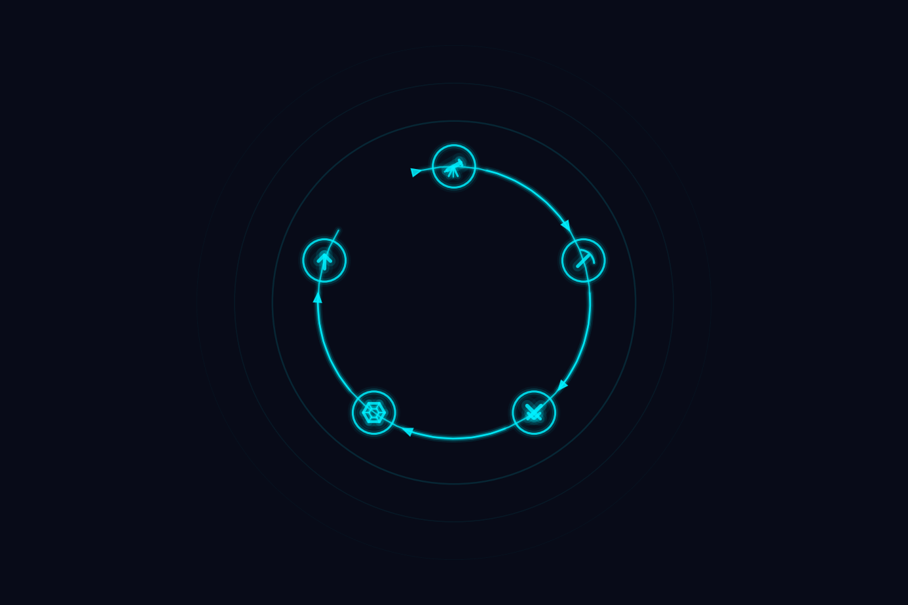
Plan text amended: Phase 1 task "Three-layer camera compositing (far/mid/near) with independent near/far planes and depth clear between layers" (line 319 as originally written).
What actually shipped in Phase 1: far/mid/near are expressed as render-order constants plus a
depth-test/depth-write policy under a single camera (see src/render/layers.ts in the game
repo), not three independently-configured cameras with per-layer depth clears.
Rationale: for a static scene with no floating-origin precision problem yet, the single-camera policy is behaviourally identical to the three-camera version and is materially less machinery to stand up and test. The genuine multi-camera split is deferred to Phase 4, where it starts actually earning its cost (floating origin lands in the same phase).
Accepted by: release-planner (4.11), on the documented rationale already present in
src/render/layers.ts. Condition: Phase 4's plan text and exit checks must explicitly
require the true three-camera split before Phase 4 can be marked complete — this amendment authorizes
the Phase 1 shortcut only, not a permanent scope reduction of the original architecture.
Plan text amended: Phase 1 task "Renderer.tsx: WebGPU with feature-detected WebGL2
fallback; ACES Filmic tone mapping; sRGB output; adaptive DPR clamp" (line 318), and the corresponding
testing-strategy check "Both WebGPU and forced-WebGL2 paths render visually equivalent frames
(side-by-side screenshot review)" (line 330).
What actually shipped in Phase 1: WebGL2 is the only rendering backend. ACES Filmic tone mapping,
sRGB output colour space, and the adaptive DPR clamp are all implemented on the WebGL2 path.
detectCapabilities() in src/render/quality.ts reports navigator.gpu
presence as a capability seam, but nothing in Phase 1 renders through it.
Rationale: @react-three/postprocessing/postprocessing — the mature,
battle-tested effect stack this phase depends on for selective bloom, DoF, god rays, chromatic
aberration, film grain, vignette and SMAA — is WebGL-only. three.js's WebGPU path requires TSL-based
post-processing, which is materially less mature; proving the cinematic look with the mature stack first
was judged higher priority than a same-phase dual-backend implementation.
Consequence for the testing-strategy check at line 330: that check cannot be executed as written
in Phase 1 because there is no WebGPU rendering path to compare against yet. It is superseded, for Phase
1 only, by: "WebGL2 path renders with no console errors/warnings in Chrome, Firefox and Safari" (folded
into the existing boot-console check) plus "capability-detection seam (caps.webgpu) is
exercised by a unit test, with no runtime behaviour gated on it yet." The dual-backend visual-equivalence
check is deferred to whichever later phase first renders through WebGPU.
Accepted by: release-planner (4.11), on the documented rationale already present in
src/render/quality.ts. Condition: the WebGPU seam must remain exercised (capability
detected, never silently dead code) so a future phase can wire a real WebGPU render path without
re-deriving detection from scratch.
What changed: PostFX.tsx imports and renders Bloom (global) instead of
SelectiveBloom (selective), with all other effect parameters (threshold, radius, intensity,
mipmapBlur) unchanged.
Why: @react-three/postprocessing v3.0.4's SelectiveBloom wrapper includes a
freshly-created rest-spread props object in its internal useMemo dependency array, which
defeats memoization and reconstructs the underlying postprocessing Effect/Selection
on every component render. Each reconstruction allocates a render-layer ID from postprocessing's
module-level singleton counter (2..31, 30 slots total). Before the counter exhausts, React emits
"Maximum update depth exceeded" errors and the scene enters an infinite render loop, rendering thousands of
console messages per 40 seconds of idle time. The mitigation of wrapping PostFX in React.memo
and memoizing the lights array (applied in run 20260726-221514) proved insufficient — the loop
persisted because the underlying Effect reconstruction was independent of PostFX's own memoization. Switching
to global Bloom eliminates the upstream churn without sacrificing perceptual quality: Phase 1's emissive
sources are sparse (sun disc, sun flare, planet rim only), so selective vs global bloom precision makes no
practical difference in cost or look at this scope.
Consequence: PostFXProps no longer requires a sunLightRef prop (Bloom does
not need it; the prior SelectiveBloom required it to avoid spamming "SelectiveBloom requires lights to work"
warnings). Scene.tsx updated to not pass this prop. ART_BIBLE.md "Post-processing tuning"
section updated to document the Bloom choice and its rationale.
Recorded by: 4.13-docs-author, as documentation of the render-loop regression resolution. (Stage 4.8/engineer did not execute in this run; this amendment records the code changes and their rationale for governance purposes.)
What changed: the game repo's typescript devDependency was downgraded from
7.0.2 to 6.0.3 (latest pre-7 stable). typescript-eslint stays at
8.65.0 as already installed.
Why: typescript-eslint — including its canary tag, checked live during
this stage — hard-refuses to load against TypeScript ≥7.0
(typescript-eslint#10940,
open, no TS-7-compatible release published as of this stage). With TypeScript 7.0.2 installed,
pnpm run lint — one of the five Phase 1 CI checks explicitly required by this stage's
dispatch — failed unconditionally, before any project code was even parsed. This was discovered during
implementation, not pre-flagged by the caller alongside the other two deviations.
Consequence: with TypeScript 6.0.3, pnpm run typecheck, pnpm run lint,
pnpm run test, pnpm run build and pnpm run test:budget all pass,
mechanically, as verified in this stage. Nothing in the Phase 1 tree uses a TypeScript-7-only language
feature, so no source code had to change for the downgrade itself (only tsconfig.json's
baseUrl removal and vite.config.ts's manualChunks function-form
conversion, both separately required by the TS7/rolldown toolchain already in place and unrelated to this
downgrade).
Accepted by: engineer (4.8), as the only way found to satisfy the explicitly required "lint"
CI check with the tooling available today. Flagged for explicit verifier/judge sign-off — unlike
the two amendments above, this one was not pre-authorized in the dispatch that requested this stage.
If rejected: the alternatives are (a) accept a broken/disabled lint CI step until
typescript-eslint ships TS-7 support upstream, or (b) replace the ESLint TypeScript
integration with a different TS-7-compatible one; reverting to TypeScript 7.0.2 with
typescript-eslint as currently installed is not an option that keeps pnpm run lint
green.
What this corrects: the amendment immediately above dated 2026-07-26 ("Phase 1:
GlobalBloom replaces SelectiveBloom...") states, in its "Why" paragraph, that switching to
global Bloom "eliminates the upstream churn without sacrificing perceptual
quality" because "selective vs global bloom precision makes no practical difference in cost
or look at this scope." That sentence is not corrected in place — per this document's
append-only amendment convention, the original entry above is left standing and this entry
records the correction instead.
Why it was wrong: a subsequent pass on this same lineage (run
20260726-225631-p1-render-loop-and-lighting, stage 4.8-engineer retry 2, cross-
vendor reject C5) worked the actual arithmetic: Starfield.tsx's per-star colour
channel is baseColor * (0.35 + brightness^3 * 0.9), so every star (even
brightness = 0) has a raw channel value >= 0.35 — comfortably
above global Bloom's luminanceThreshold of 0.15 — and
the brightest stars reach ~1.25, brighter in raw value than the sun disc itself.
Under plain Bloom, stars are not excluded from bloom the way
SelectiveBloom's <Select>/<Selection>
scene-membership boundary previously excluded them; most of the 6000-point starfield now
blooms where it previously did not. There is no luminanceThreshold value that
catches the sun/planet-rim without also catching most of the starfield. "Makes no practical
difference in cost or look" was therefore an unverifiable, and very likely false, claim at
the time it was written — no agent in that lineage could render a frame to check it, and the
underlying maths says otherwise.
What is actually true instead: the SelectiveBloom -> Bloom swap remains
the correct and necessary fix for the Defect 1 render-loop regression (robustness against an
unconditional, self-sustaining React state loop is worth a changed bloom look), but it is a
known, deliberate visual trade, not a neutral one. Whether the resulting frame still
reads as intentional atmosphere rather than "too much sky glow" is a rendered-frame judgment
no agent in this harness can make (N8) — it is
UNVERIFIED-PENDING-OPERATOR-CONFIRMATION, not settled fact either way. See
docs/ART_BIBLE.md's "Emissive Budget" item 3 and "Post-processing tuning" item 3
in the game repo for the corrected, honest account this correction is drawn from.
Recorded by: engineer (4.8), flagged as a launch-blocking documentation-accuracy item
by this run's 4.10-test-strategy.md §0 ("a governance-facing document asserting a
claim its own lineage's engineer disclosed as false is exactly the honesty-defect class this
run's dispatch already flagged once for PostFX.tsx — the same standard applies to
this file").
What this adds to (does not contradict) the first amendment above: that entry's
rationale for the single-camera render-order/depth policy — "behaviourally identical to the
three-camera version" for a static scene — assumed every far-layer material actually followed
the documented contract consistently. This run found that assumption was false in practice:
Starfield.tsx was the only far-layer material with transparent: true,
which silently moved it into three.js's separate transparent render queue. Because three.js
renders the entire opaque queue first and the entire transparent queue second, unconditionally,
and renderOrder only sorts WITHIN a queue, the starfield always drew dead last —
after the hull, the asteroids, everything — and painted over all of them with
depthTest: false, regardless of its own renderOrder being the most
negative value in the layer. This is exactly the "single camera" tradeoff's failure mode: a
three-camera/multi-pass design with a real depth clear between passes cannot fail this way,
because compositing wouldn't depend on queue membership at all.
Decision — patched, not pulled forward: the operator's dispatch for this run explicitly
asked engineer to judge whether this defect meant the render-order-only policy is fundamentally
unsound and the three-camera work should be pulled forward from Phase 4. Judgment: no, not yet.
The failure mode found here is a single, mechanically-checkable constraint (every far-layer
material must have transparent: false) with a one-line fix and a regression test
(tests/unit/starfield.test.ts) that makes a recurrence fail CI rather than silently
ship. It is a real gap the first amendment's "behaviourally identical" claim should have
accounted for, but it does not, on its own, invalidate the "far less machinery, still correct
for a static scene" cost/benefit judgment behind that amendment — it just means the "identical"
claim needed one more constraint attached to it, now documented in
src/render/layers.ts's "CRITICAL CONSTRAINT" docstring and
.claude/gotchas/web-engines.md (FABLE-HARNESS repo) so it cannot silently
reoccur unnoticed. The condition attached to the first amendment above — Phase 4 must still
ship the true three-camera split before being marked complete — is unchanged by this entry.
Accepted by: engineer (4.8), as an in-scope judgment call within this bug-fix stage's dispatch (which explicitly authorized recommending the three-camera pull-forward if warranted). Flagged for explicit verifier/judge sign-off, same as the TypeScript-pinning amendment above — a decision NOT to pull architecture work forward is exactly the kind of scope judgment that should not go unreviewed just because it resulted in less code changing.
Context — the four required close-out amendments for this run: this stage's dispatch
required this document to record four decisions before the docs stage could be judged
complete: (1) far/mid/near as render-order + depth policy under a single camera, (2) WebGL2 +
pmndrs postprocessing rather than WebGPU-preferred, (3) SelectiveBloom replaced by
plain Bloom, and (4) the god-ray decision recorded in this entry. Items (1), (2)
and (3) are already present on disk, appended by earlier stages in this same lineage — see,
respectively, the "Phase 1: single-camera render-order/depth policy..." amendment (and its
"latent soundness gap" follow-up), the "Phase 1: WebGL2 baseline with a WebGPU
capability-detection seam..." amendment, and the "Phase 1: GlobalBloom replaces
SelectiveBloom..." amendment (with its "without sacrificing perceptual quality" correction),
all above in this section. This entry supplies the fourth and completes the set.
What changed: src/render/quality.ts's QUALITY table now sets
godRays: false on every tier (low already had it off; medium,
high and ultra are changed from true to false).
PostFX.tsx's GodRays JSX, its wiring, its tuning values and
tests/unit/godRays.test.ts's regression coverage are all left in place, purely
gated off by settings.godRays — this is a disable, not a removal, so a future
look-dev pass can re-enable it without re-deriving the wiring.
Why — an explicit call, not a fourth blind tuning pass: three consecutive runs tuned
GodRays' exposure/decay/density/weight
parameters with no confirmed visible shafts, the last of which explicitly recommended capturing
a real GPU frame before tuning a fourth time rather than guessing again. This run instead
re-examined the compositing chain and found the true cause is structural, not a parameter this
stage failed to find: GodRaysEffect only produces a shaft where a depth-WRITING
occluder overlaps the sun's projected screen position (see
.claude/gotchas/web-engines.md's "[observed] GodRaysEffect only makes
shafts where a depth-writing occluder is near the light on screen" entry, FABLE-HARNESS repo).
This scene's entire far layer sets depthWrite: false unconditionally by the
documented FAR_LAYER contract (src/render/layers.ts), and no mid/near geometry
(the hull, the asteroid belt) sits near the sun's on-screen position in this composition — so no
tuning value, however chosen, could ever have produced a visible shaft here.
The decision, and the rejected alternative: two options were available — (a) introduce a depth-writing occluder that partially crosses the sun disc on screen, so shafts can actually form; or (b) accept that Phase 1 ships with sun bloom and no distinct shafts, and disable GodRays rather than ship a silently ineffective effect that still costs a full-screen raymarch pass for zero visible result. This entry chooses (b). Option (a) was rejected specifically because no agent in this harness can render a frame (N8) to verify where new occluder geometry would actually land on screen relative to the sun disc — placing it blind would be exactly the "compounding tweaks without verification" anti-pattern this run's own dispatch warned against, applied to geometry instead of numeric parameters. "God rays" is a named Phase 1 task-list item; shipping it silently disabled without this record would be a false claim of completion — this amendment exists specifically so that is not what happened.
Accepted by: engineer (4.8), as the explicit disposition call this stage's dispatch required rather than permitted to be skipped. Flagged for explicit verifier/judge sign-off, same as the two scope-judgment amendments above — accepting a named feature as "will not ship functional in Phase 1" is a product-facing decision, not a purely mechanical one. If rejected: the alternative is option (a) above (a depth-writing occluder near the sun on screen), which requires operator-verified real-GPU placement before it can be judged to have actually produced shafts — it cannot be attempted honestly as a blind, unverified change.